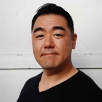
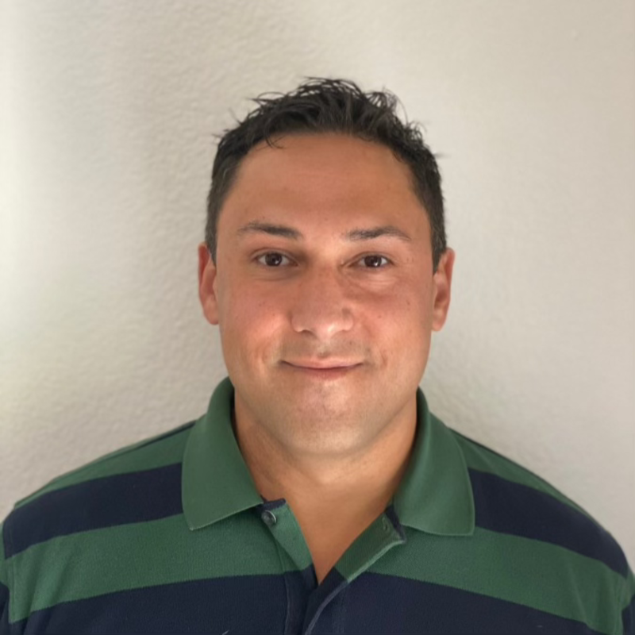

A pipeline your sales team actually updates, so no booked job ever goes cold in someone's inbox
For owners whose CRM was built for a generic sales team, and whose sales team is not generic. We rebuild pipeline stages, handoff rules, and automation around how your team actually sells, on the platform you already own, and verify the data ourselves for the first 30 days.
How much revenue is sitting in a CRM your team quietly stopped trusting?
You have likely lived the pattern: the CRM got implemented, the team used it for a month, and then deal tracking quietly moved back to phones and memory. Pipeline reports need manual cleanup before every leadership review, attribution stops at clicks instead of closed deals, and follow-up breaks just long enough for a qualified lead to close with a competitor.
A CRM nobody updates is not a CRM. It is an annual subscription to a database nobody trusts. You need stages your team recognizes, follow-up that fires on its own, and a name attached to making the data hold.
Pipeline stages, source tagging, handoff rules, follow-up sequences, AI agents, and closed-won attribution, configured around how your team actually sells on any of these platforms or a custom build. Live data lands after your audit.
A written CRM audit, not a pitch
A 45-minute working session where we walk your existing setup, deal stages, automation, and historical data. You leave with written findings on where deals stall and where the data contradicts what leadership is being told, whether or not you ever hire us.
If the numbers do not support an engagement, we say so on the call. No forced platform migration, no rebuild for its own sake.
Single-channel CRM engagements start at $20K per month. Scoped after the audit.
A written CRM audit
Your deal stages, automation sequences, and historical data read end to end. Where deals stall, where follow-up breaks, and where the pipeline report disagrees with reality, all named in writing.
A sales cycle map in your team's words
Built from interviews with the people who actually sell and answer the phone. Your stages, your terminology, your handoff points, not a vendor's defaults.
A verified handoff
A recorded live training session, every automation verified in staging before it touches production, a one-page operating reference, and 30 days of founder-level data verification after launch.
Your sales process, rebuilt in your team's vocabulary
The platform is almost never the problem. The configuration is. So the order is fixed: read what you have, map how your team actually sells, rebuild the pipeline around that map, and hand it off verified.
The audit comes first in writing, the sales cycle map comes from your team's own words, and nothing ships to production before it passes staging.
One team runs the whole stack
Most agencies sell you a CRM configuration in isolation. We run it as the loop-back for every channel we operate: SEO, Google Ads, Meta Ads, and AI agents feed leads in, and closed-won outcomes flow back to the channel that earned them, under one team and one dashboard.
-
 01
SEO Rankings on the queries that become booked calls, not on the ones that look good in a report.
01
SEO Rankings on the queries that become booked calls, not on the ones that look good in a report. -
 02
Google Ads Search, Performance Max and Local Service Ads built to buy revenue, not clicks.
02
Google Ads Search, Performance Max and Local Service Ads built to buy revenue, not clicks. -
 03
AI Automation Lead intake and qualification that runs 24/7, so the traffic SEO earns never goes to a competitor who answered first.
03
AI Automation Lead intake and qualification that runs 24/7, so the traffic SEO earns never goes to a competitor who answered first. -
 04
Meta Ads Facebook and Instagram acquisition with server-side conversion and iOS-safe measurement.
04
Meta Ads Facebook and Instagram acquisition with server-side conversion and iOS-safe measurement. -
 05
Full-Stack Marketing One team across search, paid, automation and the site, so no vendor blame layer eats your budget.
05
Full-Stack Marketing One team across search, paid, automation and the site, so no vendor blame layer eats your budget. -
 06
Web Design Sites written to convert the traffic we send, instrumented for booked work end to end.
06
Web Design Sites written to convert the traffic we send, instrumented for booked work end to end.
Built for one of three verticals. Pick yours: home services, medical and dental, or legal.
The questions a careful buyer is already holding
Do we have to switch CRM platforms?
Can you build from scratch if we have nothing?
How does the CRM connect to our marketing?
Who actually does the configuration?
How do we know the data will hold after handoff?
What does CRM development cost?
Three founders. You will speak to one of them

Brian Hong
Michael Merlino

Dimitry Morgan
The person who maps your sales cycle is the person who configures every stage
Is now a bad time to find out how much revenue is sitting in a pipeline nobody trusts? We walk your CRM setup, your deal stages, and your automation in a working session, and you leave with written findings whether or not you hire us. No deck. No pitch. No forced migration.
45 minutes. Michael Merlino, Chief Strategist and AI Systems, runs the call.